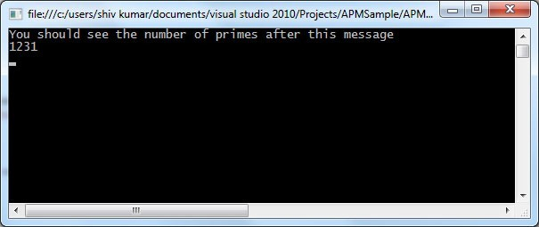

The APM or Asynchronous programming model has been in .NET since the beginning. There are quite a few BCL classes that use this programming model to effectively provide asynchronous methods to methods that also have synchronous counterparts. But what if you want to make one of your existing methods asynchronous? In this post I show you how simple it is to make an existing synchronous method available as an asynchronous method.
Before we go down that route, let me say that I assume you're somewhat familiar with using asynchronous methods. The intent of this post is to show you how you would convert one or more of your own synchronous methods into asynchronous method. So I'm not going to be explaining the basics of asynchronous programming in .NET.
The APM design pattern in .NET uses some naming conventions for the method names as well as the basic method signatures. You'll have BeginXXX and EndXXX method, where XXX is the name of the synchronous method. In other words asynchronous operations that use the APM (IAsyncResult) design pattern are implemented as a pair of methods. The basic method signature for the BeginXXX method is
IAsyncResult BeginXXX(AsyncCallback callback, object state)
The basic method signature for the EndXXX method is
void EndXXX(IAsyncResult result)
Now if we want to make one of our own methods asynchronous then we'll have to follow the basic signature. If our method required additional parameters or has a return type then we can include these parameters, while keeping the basic signature. The idea is to re-use our existing method (and implementation) but as an asynchronous operation.
So lets say we have a method in our business layer class that does some compute-bound work. For the sake of an example let's say the method requires an int[]as an input parameter and it returns the number of prime numbers in the array as an int. The synchronous version of the method in shown in the code listing below.
Synchronous Version of the GetNumberOfPrimeNumbersInArray method
/// <summary> /// Synchronous Method to Get the number of prime numbers in an array of numbers /// </summary> /// <param name="numbers"></param> /// <returns></returns> public int GetNumberOfPrimeNumbersInArray(int[] numbers) { int count = 0; for (int i = 0; i < numbers.Length; i++) { if (IsPrime(numbers[i])) count++; } return count; } private bool IsPrime(int number) { if (number == 4) return false; for (int i = 2; i < number / 2; i++) if (number % i == 0) return false; return true; } }
Implementing Asynchronous Methods
The BeginXXX method takes any parameters declared in the signature of the synchronous version of the method that are passed by value or by reference (in this case the int[]). Any out parameters are not part of the BeginXXX method signature. The BeginXXX method signature also includes two additional parameters which are part of the basic method signature as shown above. Further, the BeginXXX method needs to also return an instance of IAsyncResult which is also part of the basic method signature. So effectively, our BeginGetNumberOfPrimeNumbersInArray method signature will look like the following
public IAsyncResult BeginGetNumberOfPrimeNumbersInArray(int[] numbers, AsyncCallback callback, object state) { }
Similarly, our EndGetNumberOfPrimeNumbersInArray method will follow the basic signature but because our synchronous version returns an int, so our End method will return an int. Following the basic method signature and making appropriate modifications to the signature, the method signature for our EndGetNumberOfPrimeNumbersInArray will look like the following:
public int EndGetNumberOfPrimeNumbersInArray(IAsyncResult result) { }
So now, all we're left with is the actual implementation of these methods. Keep in mind that we're going to use the existing synchronous method in here so we don't have to re-implement the existing method but rather re-use it asynchronously.
Looking at the signature of our BeginXXX method a question that's going to come up (if it hasn't already) is that we'll need an implementation of the IAsyncResult interface. That's true. Implementing the IAsyncResult is not a trivial task. However all delegates provide us with an instance of an IAsyncResult upon calling their BeginInvoke method. So we could look at using this approach. The general consensus on the .NET community is that using the delegate's BeginInvoke/EndInvoke is slow. Slow is a relative term. If the method itself is going to take 2-3 seconds or more to complete then any performance gains you might get by implementing your own IAsyncResult quickly diminishes. Remember that you only call BeginInvoke once. Now in the case where you're calling your asynchronous method thousands of times or more then improving on this slowness could make a difference.
IAsyncResult Implementations
There are some well written implementations available that you could use instead of delegates, but I'll leave that up to you. The concept remains the same and you can easily swap out the delegate version for any of the other implementations. The LazyAsyncResult internal class (that's part of the System.NET assembly) is a good place to look (using Reflector) if you're interested in implementing your own IAsyncResult implementation.
A few others are
- Jeffrey Richter's implementation
- Implementing the CLR Asynchronous Programming Model
- Joe Duffy's implementation
- Implementing a high-perf IAsyncResult: lock-free lazy allocation
The code listing below shows the completed implementations of the BeginGetNumberOfPrimeNumbersInArray and the EndGetNumberOfPrimeNumbersInArray method. We also use an AsyncState class that is shown towards the end of the code listing. It's just a simple class that is used to pass state information between the Begin and End methods.
In the Begin method, we define a delegate that has the same signature as our synchronous method. That's because we will be calling our synchronous method asynchronously and we use a delegate to help with calling it asynchronously. A reference to this delegate is passed along to the End method via the AsyncState object.
Code Listing Showing the BeginXXX and EndXXX implementations
public class BusinessModule { public IAsyncResult BeginGetNumberOfPrimeNumbersInArray(int[] numbers, AsyncCallback callback, object state) { Func<int[], int> del = GetNumberOfPrimeNumbersInArray; var asyncState = new AsyncState(del, state); return del.BeginInvoke(numbers, callback, asyncState); } public int EndGetNumberOfPrimeNumbersInArray(IAsyncResult result) { var asyncState = (AsyncState)result.AsyncState; var del = (Func<int[], int>)asyncState.Del; return del.EndInvoke(result); } /// <summary> /// Synchronous Method to Get the number of prime numbers in an array of numbers /// </summary> /// <param name="numbers"></param> /// <returns></returns> public int GetNumberOfPrimeNumbersInArray(int[] numbers) { int count = 0; for (int i = 0; i < numbers.Length; i++) { if (IsPrime(numbers[i])) count++; } return count; } private bool IsPrime(int number) { if (number == 4) return false; for (int i = 2; i < number / 2; i++) if (number % i == 0) return false; return true; } } public class AsyncState { public Delegate Del { get; private set; } public object State { get; private set; } public AsyncState(Delegate del, object state) { Del = del; State = state; } }
Using Asynchronous Methods
The code listing below is the entire code you'll need to run this application. Using our new asynchronous method is similar to using any asynchronous method you would encounter in the .NET BCL. You can see the call to our BeginGetNumberOfPrimeNumbersInArray method in the main method shown below.
Complete code listing - Showing how ot call the Async method.
class Program { static void Main(string[] args) { var bm = new BusinessModule(); var numbers = Enumerable.Range(0, 10000).ToArray(); bm.BeginGetNumberOfPrimeNumbersInArray(numbers, GetNumberOfPrimeNumbersInArrayCallback, bm); Console.WriteLine("You should see the number of primes after this message"); Console.ReadLine(); } static void GetNumberOfPrimeNumbersInArrayCallback(IAsyncResult result) { var asyncState = (AsyncState)result.AsyncState; var del = (Func<int[], int>)asyncState.Del; var numberOfPrimes = del.EndInvoke(result); Console.WriteLine(numberOfPrimes); } } public class BusinessModule { public IAsyncResult BeginGetNumberOfPrimeNumbersInArray(int[] numbers, AsyncCallback callback, object state) { Func<int[], int> del = GetNumberOfPrimeNumbersInArray; var asyncState = new AsyncState(del, state); return del.BeginInvoke(numbers, callback, asyncState); } public int EndGetNumberOfPrimeNumbersInArray(IAsyncResult result) { var asyncState = (AsyncState)result.AsyncState; var del = (Func<int[], int>)asyncState.Del; return del.EndInvoke(result); } /// <summary> /// Synchronous Method to Get the number of prime numbers in an array of numbers /// </summary> /// <param name="numbers"></param> /// <returns></returns> public int GetNumberOfPrimeNumbersInArray(int[] numbers) { int count = 0; for (int i = 0; i < numbers.Length; i++) { if (IsPrime(numbers[i])) count++; } return count; } private bool IsPrime(int number) { if (number == 4) return false; for (int i = 2; i < number / 2; i++) if (number % i == 0) return false; return true; } } public class AsyncState { public Delegate Del { get; private set; } public object State { get; private set; } public AsyncState(Delegate del, object state) { Del = del; State = state; } }
Because the method is asynchronous and we're calling in asynchronously rather than making a blocking call (which is also an option when using the APM), you'll see the message:
You should see the number of primes after this messageBefore you see the count of the number of prime numbers in the int array. So for example, on my desktop, the output I see is.
